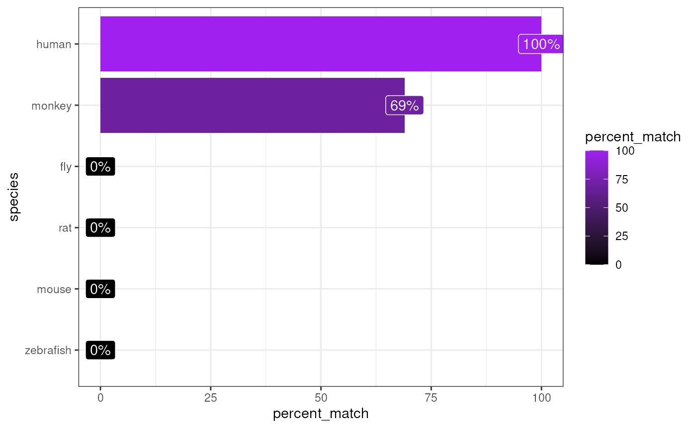

Infer species
¶ Author:
Brian M. Schilder ¶
¶ Most recent update:
Apr-18-2023 ¶
Source: vignettes/infer_species.Rmd
infer_species.RmdInstallation
if (!requireNamespace("BiocManager", quietly = TRUE))
install.packages("BiocManager")
# orthogene is only available on Bioconductor>=3.14
if(BiocManager::version()<"3.14")
BiocManager::install(update = TRUE, ask = FALSE)
BiocManager::install("orthogene")Introduction
It’s not always clear whether a dataset is using the original species gene names, human gene names, or some other species’ gene names.
infer_species takes a list/matrix/data.frame with genes
and infers the species that they best match to!
For the sake of speed, the genes extracted from gene_df
are tested against genomes from only the following 6
test_species by default: - human - monkey - rat - mouse -
zebrafish - fly
However, you can supply your own list of test_species,
which will be automatically be mapped and standardised using
map_species.
Examples
Mouse genes
Infer the species
matches <- orthogene::infer_species(gene_df = exp_mouse,
method = method)## Preparing gene_df.## sparseMatrix format detected.## Extracting genes from rownames.## 15,259 genes extracted.## Testing for gene overlap with: human## Retrieving all genes using: homologene.## Retrieving all organisms available in homologene.## Mapping species name: human## Common name mapping found for human## 1 organism identified from search: 9606## Gene table with 19,129 rows retrieved.## Returning all 19,129 genes from human.## Testing for gene overlap with: monkey## Retrieving all genes using: homologene.## Retrieving all organisms available in homologene.## Mapping species name: monkey## Common name mapping found for monkey## 1 organism identified from search: 9544## Gene table with 16,843 rows retrieved.## Returning all 16,843 genes from monkey.## Testing for gene overlap with: rat## Retrieving all genes using: homologene.## Retrieving all organisms available in homologene.## Mapping species name: rat## Common name mapping found for rat## 1 organism identified from search: 10116## Gene table with 20,616 rows retrieved.## Returning all 20,616 genes from rat.## Testing for gene overlap with: mouse## Retrieving all genes using: homologene.## Retrieving all organisms available in homologene.## Mapping species name: mouse## Common name mapping found for mouse## 1 organism identified from search: 10090## Gene table with 21,207 rows retrieved.## Returning all 21,207 genes from mouse.## Testing for gene overlap with: zebrafish## Retrieving all genes using: homologene.## Retrieving all organisms available in homologene.## Mapping species name: zebrafish## Common name mapping found for zebrafish## 1 organism identified from search: 7955## Gene table with 20,897 rows retrieved.## Returning all 20,897 genes from zebrafish.## Testing for gene overlap with: fly## Retrieving all genes using: homologene.## Retrieving all organisms available in homologene.## Mapping species name: fly## Common name mapping found for fly## 1 organism identified from search: 7227## Gene table with 8,438 rows retrieved.## Returning all 8,438 genes from fly.## Top match:
## - species: mouse
## - percent_match: 92%
Rat genes
Create example data
To create an example dataset, turn the gene names into rat genes.
exp_rat <- orthogene::convert_orthologs(gene_df = exp_mouse,
input_species = "mouse",
output_species = "rat",
method = method)## Preparing gene_df.## sparseMatrix format detected.## Extracting genes from rownames.## 15,259 genes extracted.## Converting mouse ==> rat orthologs using: homologene## Retrieving all organisms available in homologene.## Mapping species name: mouse## Common name mapping found for mouse## 1 organism identified from search: 10090## Retrieving all organisms available in homologene.## Mapping species name: rat## Common name mapping found for rat## 1 organism identified from search: 10116## Checking for genes without orthologs in rat.## Extracting genes from input_gene.## 13,812 genes extracted.## Extracting genes from ortholog_gene.## 13,812 genes extracted.## Checking for genes without 1:1 orthologs.## Dropping 486 genes that have multiple input_gene per ortholog_gene (many:1).## Dropping 148 genes that have multiple ortholog_gene per input_gene (1:many).## Filtering gene_df with gene_map## Setting ortholog_gene to rownames.## Loading required namespace: DelayedArray##
## =========== REPORT SUMMARY ===========## Total genes dropped after convert_orthologs :
## 2,322 / 15,259 (15%)## Total genes remaining after convert_orthologs :
## 12,937 / 15,259 (85%)Infer the species
matches <- orthogene::infer_species(gene_df = exp_rat,
method = method)## Preparing gene_df.## sparseMatrix format detected.## Extracting genes from rownames.## 12,937 genes extracted.## Testing for gene overlap with: human## Retrieving all genes using: homologene.## Retrieving all organisms available in homologene.## Mapping species name: human## Common name mapping found for human## 1 organism identified from search: 9606## Gene table with 19,129 rows retrieved.## Returning all 19,129 genes from human.## Testing for gene overlap with: monkey## Retrieving all genes using: homologene.## Retrieving all organisms available in homologene.## Mapping species name: monkey## Common name mapping found for monkey## 1 organism identified from search: 9544## Gene table with 16,843 rows retrieved.## Returning all 16,843 genes from monkey.## Testing for gene overlap with: rat## Retrieving all genes using: homologene.## Retrieving all organisms available in homologene.## Mapping species name: rat## Common name mapping found for rat## 1 organism identified from search: 10116## Gene table with 20,616 rows retrieved.## Returning all 20,616 genes from rat.## Testing for gene overlap with: mouse## Retrieving all genes using: homologene.## Retrieving all organisms available in homologene.## Mapping species name: mouse## Common name mapping found for mouse## 1 organism identified from search: 10090## Gene table with 21,207 rows retrieved.## Returning all 21,207 genes from mouse.## Testing for gene overlap with: zebrafish## Retrieving all genes using: homologene.## Retrieving all organisms available in homologene.## Mapping species name: zebrafish## Common name mapping found for zebrafish## 1 organism identified from search: 7955## Gene table with 20,897 rows retrieved.## Returning all 20,897 genes from zebrafish.## Testing for gene overlap with: fly## Retrieving all genes using: homologene.## Retrieving all organisms available in homologene.## Mapping species name: fly## Common name mapping found for fly## 1 organism identified from search: 7227## Gene table with 8,438 rows retrieved.## Returning all 8,438 genes from fly.## Top match:
## - species: rat
## - percent_match: 100%
Human genes
Create example data
To create an example dataset, turn the gene names into human genes.
exp_human <- orthogene::convert_orthologs(gene_df = exp_mouse,
input_species = "mouse",
output_species = "human",
method = method)## Preparing gene_df.## sparseMatrix format detected.## Extracting genes from rownames.## 15,259 genes extracted.## Converting mouse ==> human orthologs using: homologene## Retrieving all organisms available in homologene.## Mapping species name: mouse## Common name mapping found for mouse## 1 organism identified from search: 10090## Retrieving all organisms available in homologene.## Mapping species name: human## Common name mapping found for human## 1 organism identified from search: 9606## Checking for genes without orthologs in human.## Extracting genes from input_gene.## 13,416 genes extracted.## Extracting genes from ortholog_gene.## 13,416 genes extracted.## Checking for genes without 1:1 orthologs.## Dropping 46 genes that have multiple input_gene per ortholog_gene (many:1).## Dropping 56 genes that have multiple ortholog_gene per input_gene (1:many).## Filtering gene_df with gene_map## Setting ortholog_gene to rownames.##
## =========== REPORT SUMMARY ===========## Total genes dropped after convert_orthologs :
## 2,016 / 15,259 (13%)## Total genes remaining after convert_orthologs :
## 13,243 / 15,259 (87%)Infer the species
matches <- orthogene::infer_species(gene_df = exp_human,
method = method)## Preparing gene_df.## sparseMatrix format detected.## Extracting genes from rownames.## 13,243 genes extracted.## Testing for gene overlap with: human## Retrieving all genes using: homologene.## Retrieving all organisms available in homologene.## Mapping species name: human## Common name mapping found for human## 1 organism identified from search: 9606## Gene table with 19,129 rows retrieved.## Returning all 19,129 genes from human.## Testing for gene overlap with: monkey## Retrieving all genes using: homologene.## Retrieving all organisms available in homologene.## Mapping species name: monkey## Common name mapping found for monkey## 1 organism identified from search: 9544## Gene table with 16,843 rows retrieved.## Returning all 16,843 genes from monkey.## Testing for gene overlap with: rat## Retrieving all genes using: homologene.## Retrieving all organisms available in homologene.## Mapping species name: rat## Common name mapping found for rat## 1 organism identified from search: 10116## Gene table with 20,616 rows retrieved.## Returning all 20,616 genes from rat.## Testing for gene overlap with: mouse## Retrieving all genes using: homologene.## Retrieving all organisms available in homologene.## Mapping species name: mouse## Common name mapping found for mouse## 1 organism identified from search: 10090## Gene table with 21,207 rows retrieved.## Returning all 21,207 genes from mouse.## Testing for gene overlap with: zebrafish## Retrieving all genes using: homologene.## Retrieving all organisms available in homologene.## Mapping species name: zebrafish## Common name mapping found for zebrafish## 1 organism identified from search: 7955## Gene table with 20,897 rows retrieved.## Returning all 20,897 genes from zebrafish.## Testing for gene overlap with: fly## Retrieving all genes using: homologene.## Retrieving all organisms available in homologene.## Mapping species name: fly## Common name mapping found for fly## 1 organism identified from search: 7227## Gene table with 8,438 rows retrieved.## Returning all 8,438 genes from fly.## Top match:
## - species: human
## - percent_match: 100%
Additional test_species
You can even supply test_species with the name of one of
the R packages that orthogene gets orthologs from. This
will test against all species available in that particular R
package.
For example, by setting test_species="homologene" we
automatically test for % gene matches in each of the 20+ species
available in homologene.
matches <- orthogene::infer_species(gene_df = exp_human,
test_species = method,
method = method)## Retrieving all organisms available in homologene.## Preparing gene_df.## sparseMatrix format detected.## Extracting genes from rownames.## 13,243 genes extracted.## Testing for gene overlap with: Mus musculus## Retrieving all genes using: homologene.## Retrieving all organisms available in homologene.## Mapping species name: Mus musculus## 1 organism identified from search: 10090## Gene table with 21,207 rows retrieved.## Returning all 21,207 genes from Mus musculus.## Testing for gene overlap with: Rattus norvegicus## Retrieving all genes using: homologene.## Retrieving all organisms available in homologene.## Mapping species name: Rattus norvegicus## 1 organism identified from search: 10116## Gene table with 20,616 rows retrieved.## Returning all 20,616 genes from Rattus norvegicus.## Testing for gene overlap with: Kluyveromyces lactis## Retrieving all genes using: homologene.## Retrieving all organisms available in homologene.## Mapping species name: Kluyveromyces lactis## 1 organism identified from search: 28985## Gene table with 4,283 rows retrieved.## Returning all 4,283 genes from Kluyveromyces lactis.## Testing for gene overlap with: Magnaporthe oryzae## Retrieving all genes using: homologene.## Retrieving all organisms available in homologene.## Mapping species name: Magnaporthe oryzae## 1 organism identified from search: 318829## Gene table with 6,598 rows retrieved.## Returning all 6,598 genes from Magnaporthe oryzae.## Testing for gene overlap with: Eremothecium gossypii## Retrieving all genes using: homologene.## Retrieving all organisms available in homologene.## Mapping species name: Eremothecium gossypii## 1 organism identified from search: 33169## Gene table with 3,874 rows retrieved.## Returning all 3,874 genes from Eremothecium gossypii.## Testing for gene overlap with: Arabidopsis thaliana## Retrieving all genes using: homologene.## Retrieving all organisms available in homologene.## Mapping species name: Arabidopsis thaliana## 1 organism identified from search: 3702## Gene table with 19,143 rows retrieved.## Returning all 19,143 genes from Arabidopsis thaliana.## Testing for gene overlap with: Oryza sativa## Retrieving all genes using: homologene.## Retrieving all organisms available in homologene.## Mapping species name: Oryza sativa## 1 organism identified from search: 4530## Gene table with 16,112 rows retrieved.## Returning all 16,112 genes from Oryza sativa.## Testing for gene overlap with: Schizosaccharomyces pombe## Retrieving all genes using: homologene.## Retrieving all organisms available in homologene.## Mapping species name: Schizosaccharomyces pombe## 1 organism identified from search: 4896## Gene table with 3,018 rows retrieved.## Returning all 3,018 genes from Schizosaccharomyces pombe.## Testing for gene overlap with: Saccharomyces cerevisiae## Retrieving all genes using: homologene.## Retrieving all organisms available in homologene.## Mapping species name: Saccharomyces cerevisiae## 1 organism identified from search: 4932## Gene table with 4,579 rows retrieved.## Returning all 4,579 genes from Saccharomyces cerevisiae.## Testing for gene overlap with: Neurospora crassa## Retrieving all genes using: homologene.## Retrieving all organisms available in homologene.## Mapping species name: Neurospora crassa## 1 organism identified from search: 5141## Gene table with 5,807 rows retrieved.## Returning all 5,807 genes from Neurospora crassa.## Testing for gene overlap with: Caenorhabditis elegans## Retrieving all genes using: homologene.## Retrieving all organisms available in homologene.## Mapping species name: Caenorhabditis elegans## 1 organism identified from search: 6239## Gene table with 7,575 rows retrieved.## Returning all 7,575 genes from Caenorhabditis elegans.## Testing for gene overlap with: Anopheles gambiae## Retrieving all genes using: homologene.## Retrieving all organisms available in homologene.## Mapping species name: Anopheles gambiae## 1 organism identified from search: 7165## Gene table with 8,428 rows retrieved.## Returning all 8,428 genes from Anopheles gambiae.## Testing for gene overlap with: Drosophila melanogaster## Retrieving all genes using: homologene.## Retrieving all organisms available in homologene.## Mapping species name: Drosophila melanogaster## 1 organism identified from search: 7227## Gene table with 8,438 rows retrieved.## Returning all 8,438 genes from Drosophila melanogaster.## Testing for gene overlap with: Danio rerio## Retrieving all genes using: homologene.## Retrieving all organisms available in homologene.## Mapping species name: Danio rerio## 1 organism identified from search: 7955## Gene table with 20,897 rows retrieved.## Returning all 20,897 genes from Danio rerio.## Testing for gene overlap with: Xenopus (Silurana) tropicalis## Retrieving all genes using: homologene.## Retrieving all organisms available in homologene.## Mapping species name: Xenopus (Silurana) tropicalis## 1 organism identified from search: 8364## Gene table with 18,446 rows retrieved.## Returning all 18,446 genes from Xenopus (Silurana) tropicalis.## Testing for gene overlap with: Gallus gallus## Retrieving all genes using: homologene.## Retrieving all organisms available in homologene.## Mapping species name: Gallus gallus## 1 organism identified from search: 9031## Gene table with 14,600 rows retrieved.## Returning all 14,600 genes from Gallus gallus.## Testing for gene overlap with: Macaca mulatta## Retrieving all genes using: homologene.## Retrieving all organisms available in homologene.## Mapping species name: Macaca mulatta## 1 organism identified from search: 9544## Gene table with 16,843 rows retrieved.## Returning all 16,843 genes from Macaca mulatta.## Testing for gene overlap with: Pan troglodytes## Retrieving all genes using: homologene.## Retrieving all organisms available in homologene.## Mapping species name: Pan troglodytes## 1 organism identified from search: 9598## Gene table with 18,730 rows retrieved.## Returning all 18,730 genes from Pan troglodytes.## Testing for gene overlap with: Homo sapiens## Retrieving all genes using: homologene.## Retrieving all organisms available in homologene.## Mapping species name: Homo sapiens## 1 organism identified from search: 9606## Gene table with 19,129 rows retrieved.## Returning all 19,129 genes from Homo sapiens.## Testing for gene overlap with: Canis lupus familiaris## Retrieving all genes using: homologene.## Retrieving all organisms available in homologene.## Mapping species name: Canis lupus familiaris## 1 organism identified from search: 9615## Gene table with 18,117 rows retrieved.## Returning all 18,117 genes from Canis lupus familiaris.## Testing for gene overlap with: Bos taurus## Retrieving all genes using: homologene.## Retrieving all organisms available in homologene.## Mapping species name: Bos taurus## 1 organism identified from search: 9913## Gene table with 18,797 rows retrieved.## Returning all 18,797 genes from Bos taurus.## Top match:
## - species: Homo sapiens
## - percent_match: 100%
Session Info
utils::sessionInfo()## R version 4.3.0 beta (2023-04-12 r84240)
## Platform: x86_64-pc-linux-gnu (64-bit)
## Running under: Ubuntu 22.04.2 LTS
##
## Matrix products: default
## BLAS: /usr/lib/x86_64-linux-gnu/openblas-pthread/libblas.so.3
## LAPACK: /usr/lib/x86_64-linux-gnu/openblas-pthread/libopenblasp-r0.3.20.so; LAPACK version 3.10.0
##
## locale:
## [1] LC_CTYPE=en_US.UTF-8 LC_NUMERIC=C
## [3] LC_TIME=en_US.UTF-8 LC_COLLATE=en_US.UTF-8
## [5] LC_MONETARY=en_US.UTF-8 LC_MESSAGES=en_US.UTF-8
## [7] LC_PAPER=en_US.UTF-8 LC_NAME=C
## [9] LC_ADDRESS=C LC_TELEPHONE=C
## [11] LC_MEASUREMENT=en_US.UTF-8 LC_IDENTIFICATION=C
##
## time zone: UTC
## tzcode source: system (glibc)
##
## attached base packages:
## [1] stats graphics grDevices utils datasets methods base
##
## other attached packages:
## [1] orthogene_1.5.3 BiocStyle_2.27.1
##
## loaded via a namespace (and not attached):
## [1] tidyselect_1.2.0 viridisLite_0.4.1
## [3] dplyr_1.1.1 farver_2.1.1
## [5] fastmap_1.1.1 lazyeval_0.2.2
## [7] homologene_1.4.68.19.3.27 digest_0.6.31
## [9] lifecycle_1.0.3 tidytree_0.4.2
## [11] magrittr_2.0.3 compiler_4.3.0
## [13] rlang_1.1.0 sass_0.4.5
## [15] tools_4.3.0 utf8_1.2.3
## [17] yaml_2.3.7 data.table_1.14.8
## [19] knitr_1.42 ggsignif_0.6.4
## [21] labeling_0.4.2 htmlwidgets_1.6.2
## [23] DelayedArray_0.25.0 aplot_0.1.10
## [25] abind_1.4-5 babelgene_22.9
## [27] withr_2.5.0 purrr_1.0.1
## [29] BiocGenerics_0.45.3 desc_1.4.2
## [31] grid_4.3.0 stats4_4.3.0
## [33] fansi_1.0.4 ggpubr_0.6.0
## [35] colorspace_2.1-0 ggplot2_3.4.2
## [37] scales_1.2.1 cli_3.6.1
## [39] rmarkdown_2.21 ragg_1.2.5
## [41] treeio_1.23.1 generics_0.1.3
## [43] ggtree_3.7.2 httr_1.4.5
## [45] gprofiler2_0.2.1 ape_5.7-1
## [47] cachem_1.0.7 stringr_1.5.0
## [49] parallel_4.3.0 ggplotify_0.1.0
## [51] BiocManager_1.30.20 matrixStats_0.63.0
## [53] vctrs_0.6.1 yulab.utils_0.0.6
## [55] Matrix_1.5-4 jsonlite_1.8.4
## [57] carData_3.0-5 bookdown_0.33
## [59] car_3.1-2 IRanges_2.33.1
## [61] S4Vectors_0.37.5 gridGraphics_0.5-1
## [63] patchwork_1.1.2 rstatix_0.7.2
## [65] systemfonts_1.0.4 plotly_4.10.1
## [67] grr_0.9.5 tidyr_1.3.0
## [69] jquerylib_0.1.4 glue_1.6.2
## [71] pkgdown_2.0.7 stringi_1.7.12
## [73] gtable_0.3.3 munsell_0.5.0
## [75] tibble_3.2.1 pillar_1.9.0
## [77] htmltools_0.5.5 R6_2.5.1
## [79] textshaping_0.3.6 rprojroot_2.0.3
## [81] evaluate_0.20 lattice_0.21-8
## [83] highr_0.10 backports_1.4.1
## [85] memoise_2.0.1 broom_1.0.4
## [87] ggfun_0.0.9 bslib_0.4.2
## [89] Rcpp_1.0.10 nlme_3.1-162
## [91] xfun_0.38 MatrixGenerics_1.11.1
## [93] fs_1.6.1 pkgconfig_2.0.3